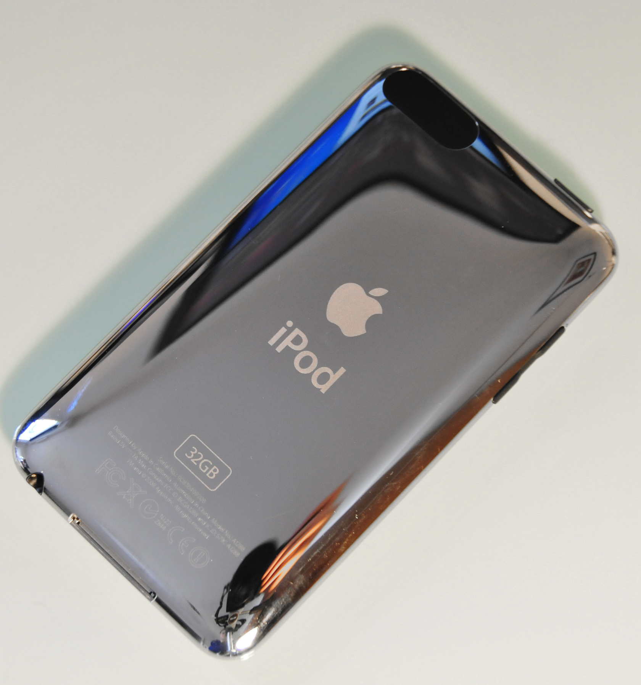
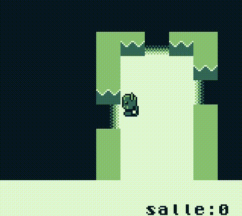
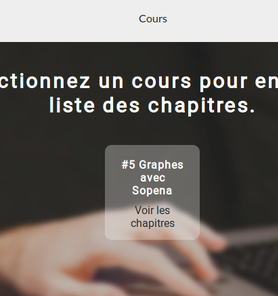
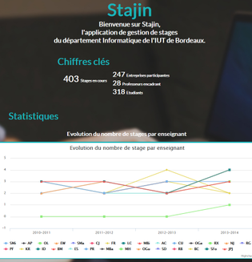

C.P.
Je suis Clovis Portron. J'ai toujours adoré construire et conçevoir des objets visant à rendre le quotidien de mes amis plus facile/divertissant. Depuis mes 10 ans, j'ai délaissé les Legos pour m'intéresser au développement informatique. Vous trouverez ici un certain nombre de mes réalisations ainsi que quelques informations concernant mon parcours et mes connaissances techniques.
Quelques projets |
||
 Ocalm Ocalm
|
Ocalm est un petit jeu d'arcade développé avec Monogame durant l'été 2014. | |
|  TalkItive | Talkitive est un projet visant à permettre d'user d'un appareil mobile Apple (Ipod touch, IPhone) comme un support graphique externe permettant d'afficher du texte via USB. | |
|  AcrossTheDungeonGB | Un rogueLike pour gameboy codé en ASM. | |
|  Calk | Un logiciel de partage et de rédaction de cours développé pour l'IUT de Bordeaux. | |
|  Stajin | Projet de gestion de stage dans le cadre de la formation en DUT informatique à Bordeaux. |